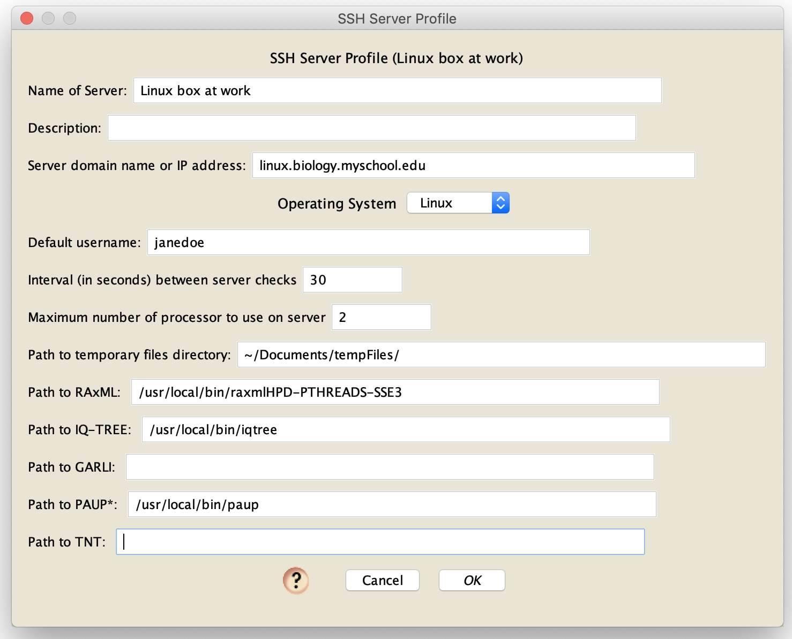

SSH Server Analyses
In addition to conducting analyses on the same computer as Mesquite, or on CIPRes, you can ask Zephyr to conduct analyses on a remote computer to which you have SSH access. "SSH" stands for "Secure Shell", and allows one to communicate with and run programs on a remote computer.
Before you use this tool in Mesquite, make sure that you have SSH access to the server. If your local computer is a Mac or Linux machine, then you can open up the Terminal (on the Mac this is in Applications/Utilities), and type the command"ssh username@serveraddress", where the "username" is the username of your account on that computer, and "serveraddress" is the domain name (e.g., "mycomputer.edu") or IP address of the server. On an updated Windows 10 machine, you will need to enable OpenSSH first. If you cannot successfully SSH into your server, it could be that the server is protected behind a firewall (e.g., you may need to VPN into the local network to have SSH access to the server), or it might be that restrictions have been put on who can SSH into the machine, or it might be that the server is a Windows machine that does not have SSH software installed or enabled. Contact the administrator of the computer to help establish an SSH connection to the computer.
Once you have confirmed that you can SSH into the server, then you can being a phylogenetic inference on the server for choosing one of the tools from the Analyses>Tree Inference submenus that have "[SSH Server]" at the end of their names. In addition to following the instructions for each program, you will also need to set up an SSH Server Profile, as described in the next section
Setting up an SSH Server Profile
You will need to establish, once, an profile for a particular SSH server. Once established, the SSH server can be simply chosen for later analyses; you will not need to set up the profile for that server again (unless you change aspects of the server). In fact, once established, you can share server profiles with other computers, but going into your Mesquite_Support_Files directory, and opening up the Mesquite_Prefs/SSHServerProfilesForZephyr directory, and finding the XML file that describes the server profile - by placing that file in the equivalent location on another computer, Mesquite will then have access to that server profile.You can set up a server profile in one to two ways: (1) with Mesquite's log window frontmost, choose Utilities>Manage SSH Servers, or (2) click on the "Manage" button on the appears on the first panel of one of Zephyr's dialog boxes when you request to use an SSH server:
In the dialog box that appears, create a new server profile, and then edit it. The dialog box for editing a profile will look something like this:

Most of the entries are self-explanatory. Note that the various paths are the paths to those files or directories on the remote server on which analyses will be conducted. Your account will need to have permission to access those files, and, in the case of the temporary files directory, it will need to be able to create folders within that directory.
Reconnecting to SSH analyses
If you begin a RAxML search on an SSH Server, the Mesquite's log window will give information about the status of the analysis. If you save your file in Mesquite while the run is happening, and then quit Mesquite, when you next open the file in Mesquite Zephyr will attempt to reconnect with remote analysis again, and read in any available results.Signing in to the SSH server
Before Mesquite can communicate to SSH server, you will need to enter your username and password for that remote computer. Mesquite will query you whenever it needs the information, which will be once in each run of Mesquite (unless you specifically request to sign in again). The next time you start up Mesquite you will need to re-enter your information.The dialog box you will be presented with looks like this:
By entering your username and password for the SSH server, you will be allowing Mesquite to sign in to the remote computer and conduct analyses on it.
SSH Server Utilities
There are several tools available to allow you to manage your SSH-based analyses. With Mesquite's log window frontmost, there are the following entries under the SSH Server Utility menu of the Utilities menu:- Manage SSH Server Profiles:This option will present a dialog box in which you can create, delete, rename, or edit your SSH server profiles.
Known Issues
- You cannot currently stop the process on the remote machine from within Mesquite. This capability will be added in a future update.
Troubleshooting
- If the SSH communication does not seem to be working, see if you can SSH into the remote computer from the command line or terminal. If that fails, there may be something preventing proper communcation; perhaps you need to VPN into the server's domain.
- Some programs, such as TNT, require that you agree to various license requirements the first time they are started. Make sure you start up such programs on the remote computer, and agree to their terms, before you ask Zephyr to connect to them via SSH.